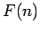
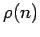
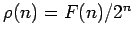
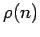
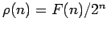

Let us write  for the number of unforgeable sequences of length
 . We give a table of values for for values of
. We give a table of values for for values of  between
1 and 20.
between
1 and 20.
It is also of interest to consider what percentage of all sequences
of length  are unforgeable, and we will denote this proportion
by . Thus
.
are unforgeable, and we will denote this proportion
by . Thus
.
| 1 | 2 | 100.00% |
| 2 | 2 | 50.00% |
| 3 | 4 | 50.00% |
| 4 | 6 | 37.50% |
| 5 | 12 | 37.50% |
| 6 | 20 | 31.25% |
| 7 | 40 | 31.25% |
| 8 | 74 | 28.91% |
| 9 | 148 | 28.91% |
| 10 | 284 | 27.73% |
| 11 | 568 | 27.73% |
| 12 | 1116 | 27.25% |
| 13 | 2232 | 27.25% |
| 14 | 4424 | 27.00% |
| 15 | 8848 | 27.00% |
| 16 | 17622 | 26.89% |
| 17 | 35244 | 26.89% |
| 18 | 70340 | 26.83% |
| 19 | 140680 | 26.83% |
| 20 | 281076 | 26.81% |
We see that the is decreasing as
 gets larger, and that it seems to converge to a
non-zero limit
as
gets larger, and that it seems to converge to a
non-zero limit
as  tends to infinity. In fact, as we shall show, this
is indeed the case, and the limit is about
26.78%. We give a very precise value for this limit
in the appendix.
tends to infinity. In fact, as we shall show, this
is indeed the case, and the limit is about
26.78%. We give a very precise value for this limit
in the appendix.